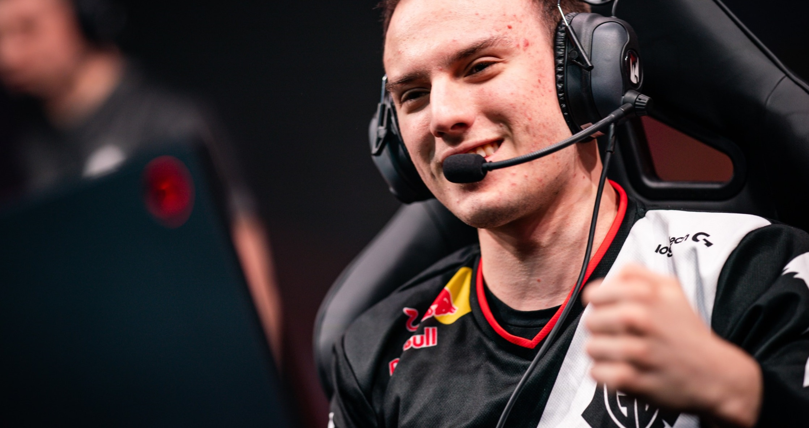
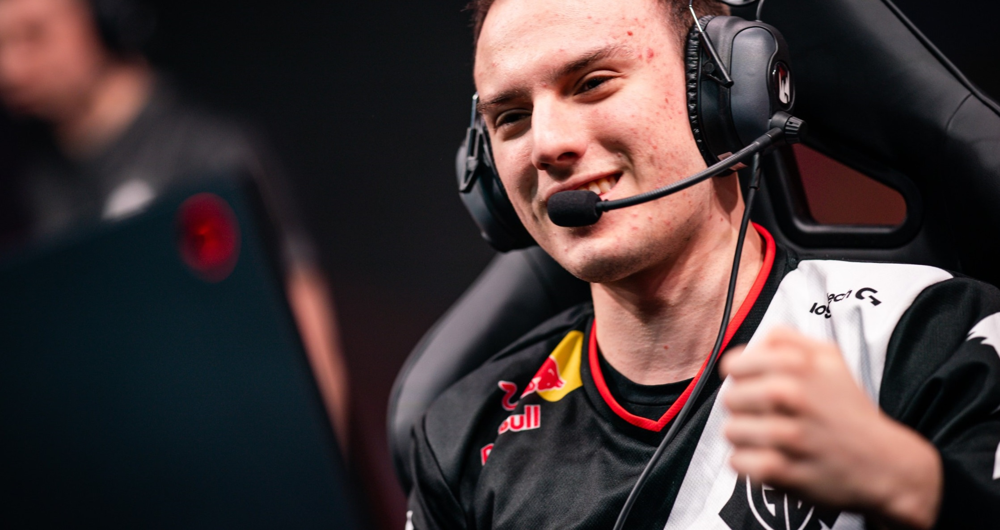
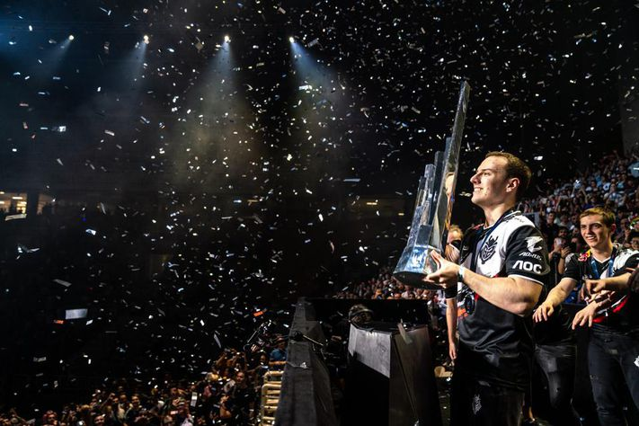

LEC superstar Perkz officially joins Cloud9
BY MATT JOHNSON, DECEMBER 2 2021
Perkz, the multi-role player left G2 with a handful of notable accolades. Aside from G2’s known
accomplishment as finalists during Worlds 2019, Perkz helped the team grab eight total LEC
championships and MSI 2019.Now part of the C9 organization, Perkz will reunite
with former G2 teammate Jesper “Zven” Svenningsen as well as meet some of NA’s
finest players in Robert “Blaber” Huang and Philippe “Vulcan” Laflamme. The mid-laner will also get
to share his veteran experience and knowledge with rookie top-laner Ibrahim “Fudge” Allami.
“I want to make NA great — not again, just great,” Perkz said with a smile.
“It’s never been great before honestly so let’s start with simple steps.”
